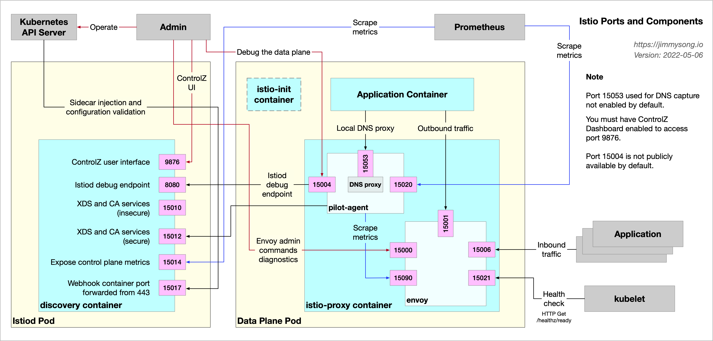
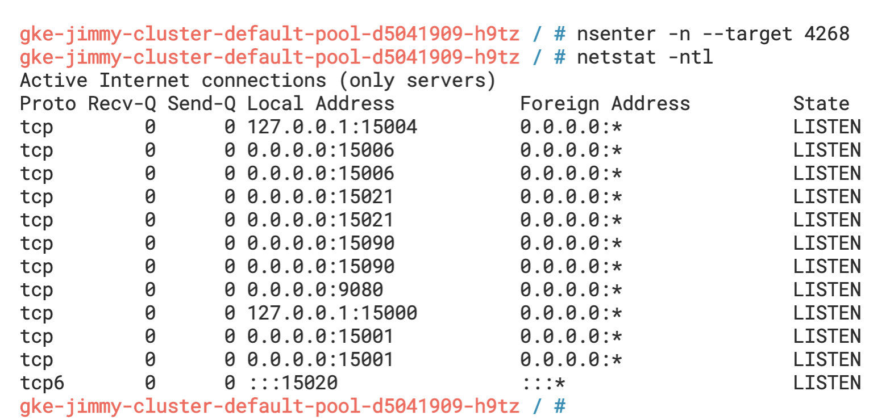
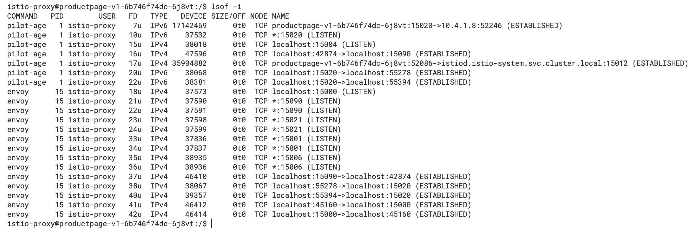
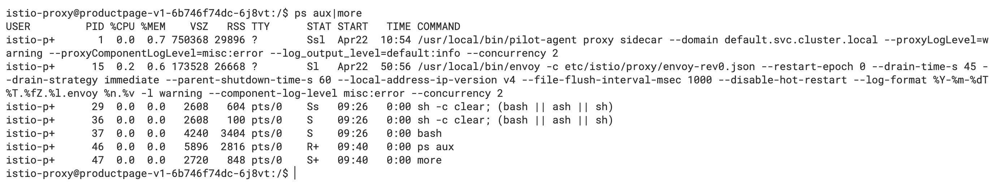
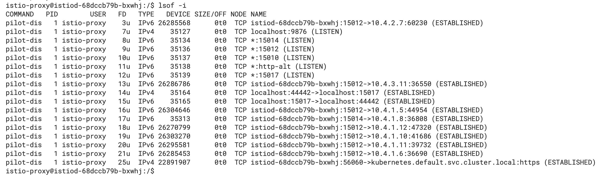
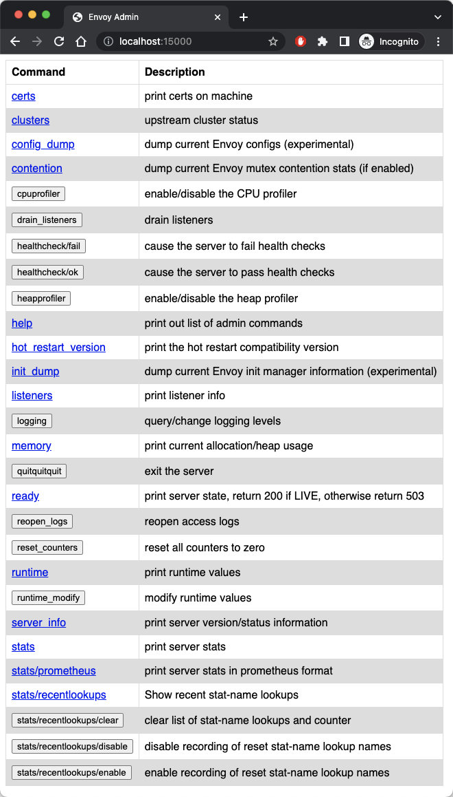
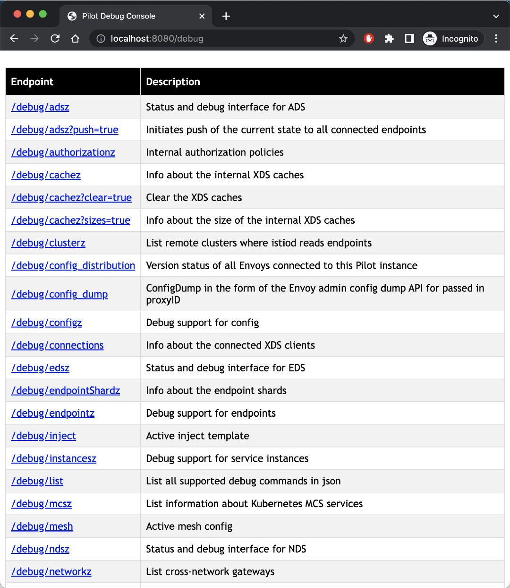
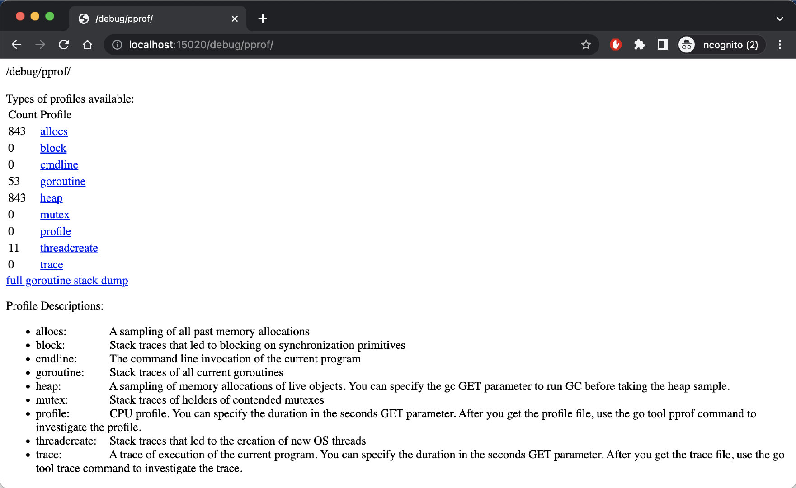

在我的前两篇博客中：
我向你详细介绍了 Istio 数据平面中的流量，但数据平面并不能孤立的存在，本文将向你展示 Istio 中的控制平面和数据平面各组件的端口及其功能，有助于你了解这些流量之间的关系及故障排查。
按照习惯，我们首先展示一个全局示意图。下图展示的是 Istio 数据平面中 sidecar 的组成，以及与其交互的对象。

我们可以使用 nsenter 命令进入Bookinfo 示例的 productpage Pod的网络空间，查看其内部监听的端口信息。

从图中我们可以看到除了 productpage 应用本身监听的 9080 端口以外，Sidecar 容器还有监听大量的其他端口，如 15000、15001、15004、15006、15021、15090 等，你可以在 Istio 文档上了解 Istio 中使用的端口。
我们再进入 productpage Pod 中，使用 lsof -i 命令查看它打开的端口，如下图所示。

我们可以看到其中有 pilot-agent 与 istiod 建立了 TCP 连接，上文中所述的监听中的端口，还有在 Pod 内部建立的 TCP 连接，这些连接对应了文章开头的示意图。
Sidecar 容器（istio-proxy ）的根进程是 pilot-agent，启动命令如下图所示：

从图中我们可以看到，它 pilot-agent 进程的 PID 是 1，是它拉起了 envoy 进程。
在 istiod 的 Pod 中查看它打开的端口，如下图所示。

我们可以看到其中的监听的端口、进程间和远程通信连接。
这些端口在你进行问题排查时可以起着举足轻重的作用。下面将根据端口所在的组件和功能分类描述。
Istiod 中的端口相对比较少且功能单一：
istiod 的进程信息istiod 调试端口，通过该端口可以查询网格的配置和状态信息从上文中，我们看到 sidecar 中有众多端口：
pilot-agent 进程，将在下文中详细解释。/healthz/ready 路径上设置了就绪探针，Istio 把 sidecar 的就绪检测交给了 kubelet，最大化利用 Kubernetes 平台自身的功能。envoy 进程将健康检查路由到 pilot-agent 进程的 15020 端口，实际的健康检查将发生在那里。pilot-agent 将通过此端口收集统计信息。以上端口可以分为以下几类：
下文将对几个重点端口详解。
15000 是 Envoy 的 Admin 接口，该接口允许我们修改 Envoy，并获得一个视图和查询指标和配置。
管理接口由一个具有多个端点的 REST API 和一个简单的用户界面组成，你可以使用下面的命令开启 productpage Pod 中的 Envoy 管理接口视图。
kubectl -n default port-forward deploy/productpage-v1 15000
在浏览器中访问 http://localhost:15000，你将看到 Envoy Admin 界面如下图所示。

通过 pilot-agent 代理 istiod 8080 端口上的调试端点，你可以进入数据平面 Pod 中访问 localhost 的 15004 端口查询网格信息，其效果与下面的 8080 端口等同。
你还可以在本地转发 istiod 8080 端口，请运行下面的命令。
kubectl -n istio-system port-forward deploy/istiod 8080
在浏览器中访问 http://localhost:8080/debug，你将看到调试端点，如下图所示。

当然，这只是一种获取网格信息和调试网格的方式，你还可以使用 istioctl 命令或 Kiali 来调试，那样将更加高效和直观。
15020 端口有三大功能：
envoy 的指标，也可以配置查询应用程序的指标，将 envoy、应用程序和自身的指标汇总以供 Prometheus 收集。对应的调试端点是 /stats/prometheus。/healthz/ready 和 /app-health。pilot-agent 进程：对应的调试端点是 /quitquitquit、debug/ndsz 和 /debug/pprof。下图展示的是使用本地端口转发后，在浏览器中打开 http://localhost:15020/debug/pprof 看到的调试信息。

图中信息展示的是 pilot-agent 的堆栈信息。
通过对 Istio 中各组件端口的了解，你应该对 Istio 中各组件的关系及其内部流量有了更进一步的认识，熟悉这些端口的功能，有助于对网格的故障排除。